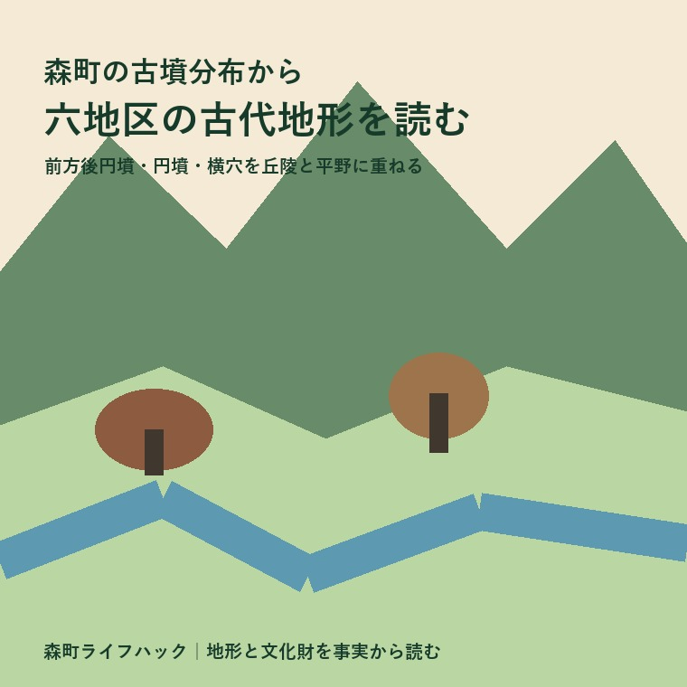
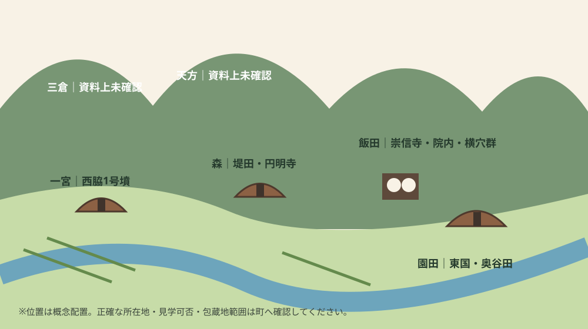
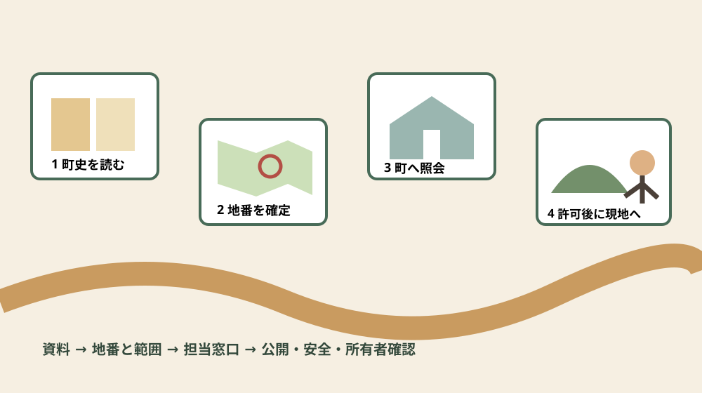

歴史・文化財・土地確認
森町の古墳分布から六地区の古代地形を読む

この記事の要点
Q. 古墳の分布は、六地区の昔の姿をどう見せますか？
A. 園田・一宮・森には5世紀末ごろの首長墓、飯田には6〜7世紀の群集墳と横穴の具体例が集中します。丘陵の先端・尾根・斜面と平野を一枚に重ねると、地形の使い分けが見えます。
導入——点名録ではなく、六地区の地形を読む
森町の古墳を調べると、東国古墳、崇信寺10号墳、院内古墳群、観音堂横穴群といった名前が並びます。しかし名前だけを覚えても、なぜその場所に墓が築かれたのか、六地区で何が同じで何が違うのかは見えません。本稿は博物館の展示案内でも地区史の総覧でもなく、古墳・横穴を地形に置き直すための「分布地図」です。
ここでいう六地区は、園田、一宮、森、飯田、天方、三倉です。現在の地区境界は古代の行政境界ではありません。六つの枠は、現在地を確認しやすくする索引として使い、古代の勢力範囲をそのまま六分割したとは考えません。
事実の柱は、森町公式の「7 古墳の発生と森」と「8 院内古墳群と横穴」です。前者は5世紀末ごろから6世紀の変化を、後者は6世紀後半から7世紀末に増えた小型古墳・横穴と副葬品を説明します。さらに現在の土地確認は「埋蔵文化財の取り扱いについて」で確かめました。
先に大切な限界を示します。「図説森町史」は平成11年2月発行時の情報を用い、町も最新情報と異なる場合があると注意しています。したがって、歴史の概略を読む資料として使えても、今日の公開状況、正確な境界、土地への立入りを保証する資料ではありません。
公式資料で確定できる十二の基礎事実
事実1。森町で古墳築造が始まるのは5世紀も終わりに近づいたころです。東国古墳、堤田古墳、西脇1号墳という三基の前方後円墳が、このころの築造とされています。
事実2。三基はいずれも墳丘長30メートル以下です。園田・一宮・森の各地域に散在し、それぞれの地域に勢力を持った首長の墓と町史は捉えています。大きさだけで全国の巨大古墳を想像せず、地域ごとの丘陵と平野の接点に注目したいところです。
事実3。園田地区円田の東国古墳は全長27メートルの前方後円墳です。丘陵の先端に前方部を東へ向けて築かれ、前方には太田川の沖積平野が広がると説明されています。地形と向きまで明示された、分布を読む基準点です。
事実4。園田地区中川の奥谷田遺跡では、墳丘を持たない木棺墓から須恵器、鉄斧、刀子が出土しました。その須恵器は、森町で古墳築造が始まる5世紀後半のものです。古代の墓を「盛土が見える場所」だけで探せない理由がここにあります。
事実5。5世紀末の前方後円墳に続き、井谷ノ谷2号墳や逆井京塚古墳のような直葬の円墳が相次いで築かれました。逆井京塚古墳は睦実にあり、推定径20メートルの円墳です。主体部は未調査で、木棺直葬か簡略な粘土槨と考えられています。
事実6。逆井京塚古墳からは変形獣文鏡、馬鐸、銅釧のほか、鈴杏葉、鹿角装刀子、玉類が出土しています。町史は豊富な副葬品を首長墓の性格を示すものと評価しています。
事実7。6世紀になると古墳を造る人が増え、古墳は小型化し、玄室へ羨道から出入りする横穴式へ変化しました。方式は石で造る横穴式石室と、丘陵斜面を掘り込む横穴の二つで、森町では両方が使われました。
事実8。飯田地区の崇信寺10号墳は、片袖式横穴式石室を早く採用した例で、6世紀中ごろの築造です。墳丘径20メートルの円墳、石室全長6メートルで、さらに長さ6メートルの墓道が続きます。
事実9。崇信寺10号墳からは、f字形鏡板、鈴杏葉、辻金具などの金銅製馬具に加え、剣、直刀、鉄鏃、刀子、玉類が出土しました。町史は、葬られた人物が森町全域に影響力を持つ首長だったことを物語るとしています。
事実10。森町で発見された古墳・横穴は270基余りで、大部分は6世紀後半から7世紀末に築かれました。狭い範囲に群をなす例が多く、一基だけでなく小群の配置を見る必要があります。
事実11。飯田地区の観音堂横穴群は23基が四つの小群に分かれ、さらに2〜3基が一まとまりをなします。一基には数人、多い場合は12、3人が埋葬され、大刀、刀子、玉、須恵器などが副葬されました。
事実12。飯田地区の院内甲墳・乙墳は墳丘径10メートルの小型円墳で、6世紀末から7世紀前半、同じ丘陵の尾根上に隣接して相次いで築かれました。金色の鞍や飾大刀が出土し、町史は武人的な職能を持つ集団との関係を考えています。

六地区別・年代／形／出土品／公開確認状況
園田地区。5世紀末ごろの東国古墳が代表点です。形は全長27メートルの前方後円墳、場所は丘陵先端、前面は太田川沖積平野です。中川の奥谷田遺跡には同時期の木棺墓があり、須恵器・鉄斧・刀子が出ています。後代の例として、森町の文化財保存活用地域計画案は文殊堂3号墳にも触れています。
園田の読みどころは、平野のただ中ではなく、平野を望む微高地や丘陵端と墓の関係です。これは「水田を支配した首長がいた」と断定する材料ではありませんが、生活・生産の場と見通しのよい墓域が近接した可能性を考える入口になります。東国古墳は町指定史跡を紹介する公式ページにも掲載されていますが、記事確認時点で常時公開、駐車場、見学路の案内までは確認できません。
一宮地区。公式町史は、5世紀末ごろの三前方後円墳の一つ西脇1号墳を、一宮地域の首長墓として位置づけます。本稿が確認したページでは、墳丘30メートル以下という三基共通の説明はありますが、個別の出土品や現在の公開方法までは示されません。
一宮は寺社の歴史が豊かなため、後世の信仰景観から古墳も連続的に説明したくなります。しかし、それは別資料で検証すべき解釈です。ここでは「5世紀末ごろ、前方後円墳、首長墓とされる、出土品と公開状況は今回の公式ページで未確認」という四点に止めます。
森地区。三前方後円墳のうち堤田古墳が森地域の例です。円明寺3号墳からは須恵器が示され、町史は6世紀以降、酒器や食器である須恵器が副葬品の主流を占めると説明します。また7世紀には森山で須恵器生産が行われたことが、町の地域計画案に記されています。
森地区では、墓の形だけでなく、墓へ納めた器と生産地の関係が問いになります。ただし円明寺3号墳の須恵器が森山産だと本稿の資料だけで断定することはできません。公開見学についても、公式ページに常時立入り可能との記載を確認できないため、地図上では「要事前確認」としました。
飯田地区。資料中の具体例が最も厚い地区です。6世紀中ごろの崇信寺10号墳、6世紀末から7世紀前半の院内甲墳・乙墳、23基からなる観音堂横穴群、装身具が出た谷口横穴群が並びます。前方後円墳一基という単独の記念物像より、尾根や斜面へ小型墓が群をなす景観が前面に出ます。
観音堂横穴3号墳の墓室左壁には、やりがんなのような彫刻刀で自由画風に描かれた鶴の線刻壁画があります。院内古墳群は飯田小学校東側の丘陵上に分布し、乙墳の石室は町史作成時点で茶畑の中に残るとされます。これは見学許可の意味ではありません。学校周辺、茶畑、私有地へ無断で入らず、公開状況を確認するのが前提です。
天方地区。今回指定された二つの町史ページでは、天方地区の具体的な古墳名、年代、形、出土品を同じ詳しさで確定できませんでした。北部山地に古墳がないという意味ではありません。「公開資料で今回拾えなかった」と「存在しない」を分けることが、この地図の重要な読み方です。
三倉地区。三倉も同様に、今回の公式資料から地区別の代表古墳を確定できません。山地では崩落、造成、植林、道路改良などで地表の見え方も変わりますが、個別地点について推測はしません。地番単位の照会が必要なら、分布図の空白を根拠にせず文化振興係へ確認します。
分布から読めること、読めないこと
読める第一の変化は、5世紀末ごろに園田・一宮・森へ散在する小規模な前方後円墳と、6世紀以降に増える小型円墳・横穴式石室・横穴の違いです。墓を造る主体が広がり、追葬できる構造が使われ、狭い範囲に家族墓とみられる群が形成されました。
第二は地形です。東国古墳は丘陵先端と沖積平野、院内古墳群は丘陵尾根、観音堂横穴群は斜面というように、墓の形式と地形が結びつきます。現代の平坦な道路地図だけでは消える高低差を、尾根・端・斜面・平野という言葉で戻すと配置が理解しやすくなります。
第三は、森町が西遠江と東遠江の境界域に位置し、西側で広がった横穴式石室と東側で広がった横穴の双方が造られたという説明です。行政境界線の上に文化が切り替わるのではなく、二つの方式が交わる地域として森町を見る方が、飯田の資料の厚みを理解できます。
一方、古墳の密度から現在の地区の優劣を語ることはできません。発見・調査・消滅・公開の履歴が違い、資料に載る量は実在した量と一致しないからです。豪華な副葬品も、現代の土地価格や集落の格を示しません。
また、古墳の位置から古代の道、河道、集落境界を一本線で復元することも本稿の範囲外です。東国古墳の前に沖積平野が広がることは事実ですが、そこから見えた風景や儀礼の意味は、発掘報告や地形史を追加して初めて論じられます。
良い点——地域を見る解像度が上がる
古墳分布を六地区で整理する良さは、観光名所の有無ではなく、地形の違いを比較できる点です。南部の平野に接する丘陵端、中央部の尾根と斜面、北部山地の資料上の空白を並べれば、「森町は山が多い」という一文を具体的な問いへ変えられます。
年代と形を同じ表に置くことにも意味があります。前方後円墳、直葬円墳、横穴式石室、斜面を掘る横穴は同じものではありません。5世紀末から7世紀末までのおよそ二百年を一色で塗らず、変化の順序を見られます。
出土品は人のつながりを考える材料です。金銅製馬具や飾大刀、鉄鏃、玉、須恵器を分けて記録すると、武人的性格、装身、飲食器という違いが見えます。ただし、誰がどの経路で入手したかは出土品名だけでは決まりません。
注文したい点——公開地図と見学情報は別に要る
町の図説は写真と説明が豊富ですが、平成11年当時の情報を基にしています。現在の所在地確認、保存状況、見学可否、駐車や徒歩経路、私有地との境を一体で確認できる案内があれば、文化財を守りながら学びやすくなります。
特に「茶畑の中に残る」「学校の東側の丘陵上」といった説明は、場所のイメージには役立つ一方、訪問許可にはなりません。公開日、案内者の要否、写真撮影の可否、足元の危険を別欄で更新する仕組みを期待します。
六地区別の件数も、調査時点、古墳と横穴の数え方、消滅分を含むかを明示して公開されれば、分布比較がより正確になります。古い町史の価値を下げるのではなく、現在情報を薄い層として重ねる発想です。

対案・結論——地図は四層で作る
第一層は史料です。遺跡名、地区、町史のページ名、確認日を書きます。古い資料なら基準年も併記し、現在も同じ状態だと決めつけません。今回なら「図説森町史は平成11年2月発行時の情報」という注記が最上段に来ます。
第二層は考古学上の属性です。推定年代、前方後円墳・円墳・横穴式石室・横穴・木棺墓の別、規模、出土品、調査済みか未調査かを分けます。「不明」を空欄にせず、不明と書くのが要点です。
第三層は地形です。丘陵先端、尾根上、斜面、沖積平野との向き、水路や道路との高低差を現地形図で確かめます。現在の地形が古代と同じとは限らないため、現況と歴史的解釈を別の色で描きます。
第四層は公開確認です。町指定史跡であること、場所が紹介されていること、自由に立ち入れることは別です。公開施設、見学路、私有地、管理者、予約、駐車、崩落や草木の状況を訪問前に確認します。
この四層を使えば、飯田の情報が多く天方・三倉が空白でも、無理に物語を作らずに済みます。空白は次の調査項目であり、地区の価値が低いという印ではありません。
土地・建築の確認へつなぐ
歴史散歩と土地の工事は別の話です。森町の現在の案内では、町内で開発を計画した場合、大小にかかわらず、その土地に埋蔵文化財が包蔵されているかを確認して必要な手続きを行うよう求めています。一般向けの古墳地図だけで該当有無を判断しません。
照会では、対象地の地番が分かる資料と、対象範囲を囲んだ住宅地図などを用意します。窓口は森町役場北館1階の社会教育課文化振興係で、ファックスとメールによる方法も公式ページに案内されています。
包蔵地内で工事に伴う掘削をする場合、確認調査が不要なとき、または試掘確認調査の後に、文化財保護法第93条第1項の届出を工事着手60日前までに町教育委員会経由で県へ提出する必要があると町は説明しています。予定日から逆算する事項です。
包蔵地に該当しなかった場合でも、工事中に遺構・遺物を見つけたら、速やかに社会教育課文化振興係へ連絡するよう案内されています。石や土器らしい物を自己判断で動かし、位置関係を失わせないことが大切です。
家族に残す記録
実家や山林、畑の近くに遺跡があるか気になるなら、住所だけでなく地番、登記名義、地目、筆界資料、接道、現況の利用者を一枚にまとめます。古墳名が似ていても対象筆が同じとは限りません。
写真には撮影日と方向を付け、尾根、斜面、擁壁、進入路、茶畑との位置関係を記録します。見学で得た印象と、役場から得た回答は欄を分けます。家族の記憶を大切にしつつ、公的確認の代わりにはしません。
残す、使う、貸す、売るの結論が未定でも整理はできます。遺跡照会は売却のためだけでなく、造成、建替え、配管、擁壁、農地の改良など、土を動かす予定を考えるときの基礎情報になります。
大石の視点——歴史への敬意と所有者の実務を分けない
ここからは私、大石浩之の意見です。古墳が近い土地を、希少価値だけで高く見せたり、手続きがあるから一律に避けたりするのは、どちらも早計だと考えます。まず対象地番と工事内容を決め、担当窓口の回答を取ることが先です。
小さな不動産業者としては、査定額の前に道路、境界、地目、農地、登記、埋蔵文化財の順で確認項目を並べます。隣接する茶畑や山林の所有者、現地へ入る道、草刈りや倒木対応の担い手も、土地を持ち続ける費用に関わります。
古墳分布図は、価格を自動計算する地図ではありません。しかし丘陵端や斜面に目を向けるきっかけになり、造成履歴、擁壁、水の流れ、境界標の見え方を現地で確認する質問表にはなります。この使い方なら歴史と不動産実務が無理なくつながります。
まだ売ると決めていない家族には、結論より記録を勧めます。地番ごとに「公式照会済み／未照会」「現地確認済み／未確認」「家族の希望」を分ければ、売らない選択、維持する選択、将来再検討する選択も同じ土台で話せます。
森町の実家や土地について、この整理から一緒に進めたい方は、ふじがおか実家カルテの森町相談窓口も利用できます。売却未定でも、住所と分かる範囲の地番から確認順を整理できます。
よくある質問
森町では古墳や横穴が何基見つかっていますか
町史は古墳・横穴を270基余りとし、大部分が6世紀後半から7世紀末とします。一方、現在の案内は古墳以外も含む遺跡を消滅分込みで270か所以上とします。単位と対象が違うため、同じ数字として足し引きしません。
古墳や横穴は自由に見学できますか
公式記事に写真や所在地説明があっても自由見学を意味しません。私有地、学校周辺、茶畑、斜面では、管理者の許可と安全確認を優先してください。
六地区すべてに同じ数の古墳がありますか
今回の資料は園田・一宮・森・飯田の具体例が多く、天方・三倉は同じ粒度では確認できません。調査や掲載の差があるため、空白を不存在と断定しません。
工事前はこの地図だけ見れば十分ですか
十分ではありません。対象地番と範囲図を用意し、森町社会教育課文化振興係へ包蔵地の該当有無を照会します。掘削予定があれば早めに相談します。
古墳分布から何を読み取れますか
丘陵先端・尾根・斜面と平野の関係、5世紀末から7世紀末にかけた墓の形式変化を考えられます。ただし現在の地区境界や土地価値を古代へ直結させることはできません。
まとめ
森町の古墳分布は、園田・一宮・森に散在する5世紀末ごろの前方後円墳から、飯田で具体像が厚い6〜7世紀の円墳・横穴式石室・横穴群へ、墓制が変化したことを見せます。東国古墳の丘陵先端、院内の尾根、観音堂の斜面を重ねると、古代地形を読む骨格ができます。
一方、天方・三倉の空白、現在の公開状況、個別地番の包蔵地該当は、今回の町史ページだけでは決まりません。分からないものを分からないまま記録し、歴史理解は町史へ、土地の現況と手続きは文化振興係へ、それぞれ確認するのが結論です。
今日できる一歩は、気になる場所について「地区、地番、遺跡名、資料名、年代、形、出土品、公開確認状況」の八欄を作ることです。古墳を訪ねる前にも土地を動かす前にも、同じ地図が確認漏れを減らします。
参考にした公式情報
- 7 古墳の発生と森／静岡県森町（2026年8月17日確認）
- 8 院内古墳群と横穴／静岡県森町（2026年8月17日確認）
- 埋蔵文化財の取り扱いについて／静岡県森町（2026年8月17日確認）
- 図説森町史／静岡県森町（2026年8月17日確認）

最終確認日：2026-08-17 ／ 公表事実と執筆者の解釈・意見を分けて記載しています。公開・保存・手続きの状況は最新の公式情報でご確認ください。